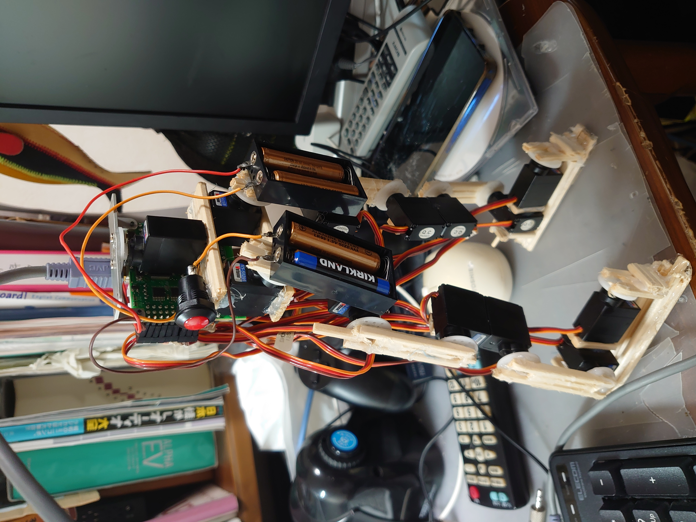
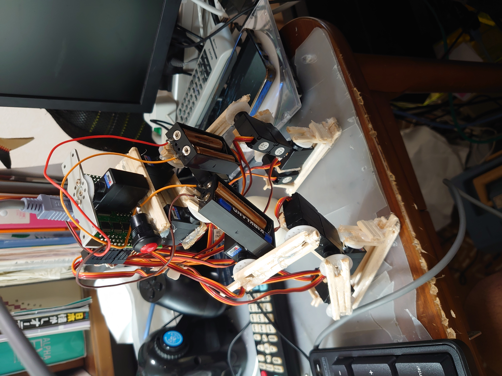

・地デジ受信用アンテナ
自室で地デジ放送を見たいがために制作したヘンテナ。室内用地デジアンテナと別途制作したヘンテナを接続している
室内アンテナとヘンテナを接合しただけでは受信感度がイマイチでいろいろ考えた結果「アンテナが2個混在しているのが悪いのでは？」と思い、室内アンテナ側を遮蔽して事なきを得た。
・割り箸フレームロボット
高校二年生の夏休みに制作したロボット。
下半身しか作ることができなかった＆歩けなかったのが残念だった
設計図を書かずにトライアンドエラーで制作したためガタガタでした。
 